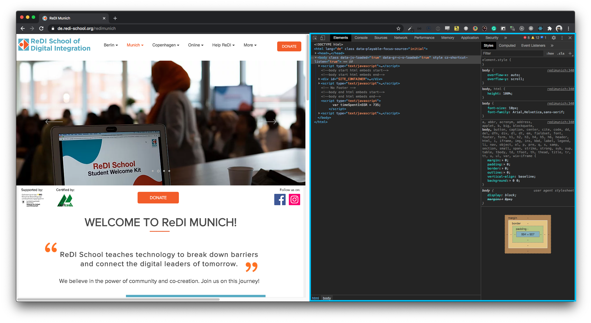

What we would cover?
- What is debugging?
- How do I debug
- Differences between Browsers
- Practice
Most essential tool
- Finding errors
- Investigate variables/return values
- Step-by-Step
Do you know one kind of debugger?
🤔
console.log
- Used by everyone
-
Sometimes simplest and most effective form of debugging
Do you another debugger?
🤔
You've already seen the DevTools several times

Open your DevTools
macOS
⌥ + ⌘ + i
Windows / Linux
F12
Or via the menu
View -> Developer -> Developer Tools (Chrome)
Tools -> Developer -> Developer Tools (MS Edge)
Tools -> Web Developer -> Toggle Tools (Firefox)
Elements / Inspector
- HTML
- Styles
- You can manipulate it!
Console
- See the output of
console.log
- read–eval–print loop (REPL)
Network
- See all network requests
- Investigate requests/responses
- Duration, size, ...
Sources / Debugger
- Take a look at the JS code
- Debug with Breakpoints
- Step-in, step-out, step-over, ....
Other tabs
- Application / Storage
- Memory
-
Performance, Accessibility, Lighthouse, ...
Debugging in 4 Steps
- Go to the Sources Tab
- Open the JS file
- Add a breakpoint
-
Trigger the action
debugger;
- Trigger breakpoints from your code
- Only works, when DevTools are open
Differences between Browsers
Basically all DevTools have kind of the same functionality
Small differences between vendors
-
Chrome wins with debugging/testing service workers
-
Chrome wins with authoring tools
-
Firefox has better for CSS (Flexbox, CSS Grid)
-
Don't be limited to Chrome or FF